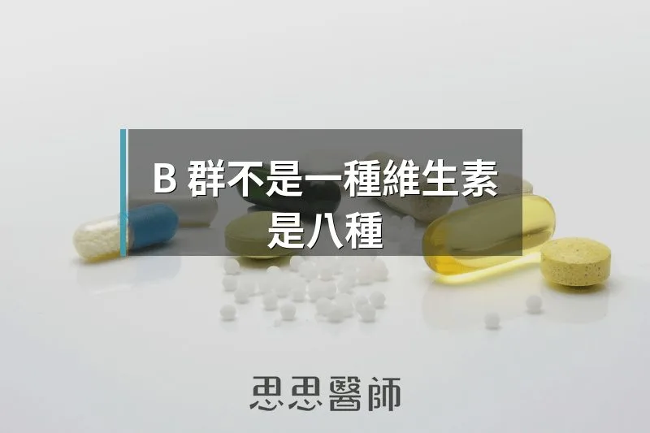

B 群不是一種維生素，是八種

「去吃個 B 群。」這句話在台灣幾乎是萬用藥方。累了吃 B 群，壓力大吃 B 群，頭髮掉了吃 B 群，補充精力吃 B 群。但如果我問你：你吃的 B 群裡面有什麼？大多數人的回答大概就是「B 群」。
B 群不是一種維生素，它是八種水溶性維生素的統稱，每一種都有不同的角色和不同的缺乏症狀，而且同一種 B 群，市面上賣的形式不同，進入身體之後的效果也可能差很多。這篇文章，我想從頭把 B 群說清楚。
B1 硫胺素（Thiamine）
B1 是細胞產能最早需要的一個環節。它是「丙酮酸去氫酶複合體（pyruvate dehydrogenase complex）」的必要輔因子，負責把葡萄糖分解後的產物丙酮酸送進粒線體繼續燃燒。如果 B1 不夠，這個步驟卡住，細胞就被迫走效率較低的無氧發酵路線。
最常見的 B1 缺乏症狀是周邊神經病變（beriberi）：手腳麻木、無力、感覺異常。在慢性飲酒者中，嚴重的 B1 缺乏會導致 Wernicke 腦病變，出現眼球運動異常、步態不穩、意識混亂，是神經科的緊急狀況。屍解研究顯示，慢性飲酒者中有 12.5% 存在 Wernicke 腦病變的病理變化。市面上的 B1 有兩種主要形式：普通的硫胺素鹽酸鹽（thiamine HCl），以及苯磷硫胺（Benfotiamine）。Benfotiamine 是脂溶性形式，可以更有效地穿越細胞膜，在神經組織的積累效果比水溶性硫胺素高，特別適合用於糖尿病神經病變的輔助補充。
B2 核黃素（Riboflavin）
B2 的主要角色是生成 FAD（黃素腺嘌呤二核苷酸）和 FMN（黃素單核苷酸），這兩者是粒線體電子傳遞鏈不可缺少的輔因子。你的細胞在燃燒燃料時，B2 就是把電子從一個地方傳到另一個地方的「導線」。B2 缺乏比較少見，症狀包括口角炎、舌頭疼痛、眼睛畏光。有一個比較意外的應用是：有研究顯示高劑量 B2（每天 400mg）可以顯著減少偏頭痛的發作頻率，可能與大腦粒線體能量代謝有關。
B3 菸鹼酸（Niacin）
B3 是 B 群裡面形式最複雜、應用最廣的一個。它的家族成員包括菸鹼酸（Nicotinic Acid）、菸鹼醯胺（Niacinamide）、以及目前抗老補充品市場上最熱門的 NR（Nicotinamide Riboside）和 NMN（Nicotinamide Mononucleotide）。
B3 最核心的功能是製造 NAD+（煙醯胺腺嘌呤二核苷酸），而 NAD+ 是超過 500 個酵素反應的輔因子，包括 DNA 修復、細胞能量代謝、以及 Sirtuin 長壽蛋白的激活。菸鹼酸在高劑量時能降三酸甘油酯、升 HDL，但會引起皮膚潮紅（flush）；菸鹼醯胺不引起潮紅，常用於皮膚抗炎；NR 和 NMN 是更直接的 NAD+ 前驅物，不需要多步驟轉換。
B5 泛酸（Pantothenic Acid）
B5 的主要工作是合成輔酶 A（Coenzyme A），CoA 是脂肪酸氧化、碳水化合物代謝、以及數百個生化反應的樞紐分子。腎上腺製造皮質醇也需要 B5 參與，所以 B5 有時被稱為「抗壓維生素」。B5 廣泛存在於幾乎所有食物中，真正缺乏的情況很罕見，但在高度加工飲食的族群中，長期攝取不足仍可能影響能量代謝。
B6 吡哆醇（Pyridoxine）
B6 是 100 多種酵素反應的輔因子，特別重要的包括：神經傳導物質合成（血清素、多巴胺、GABA 都需要 B6 參與最後的轉換步驟）、胺基酸代謝，以及甲基化循環中同半胱胺酸的代謝。
形式選擇上，常見補充品使用的是吡哆醇鹽酸鹽（Pyridoxine HCl），進入身體後需要轉換成活性形式 P5P（Pyridoxal-5-Phosphate，磷酸吡哆醛）才能被酵素使用。肝功能不佳的人，這個轉換步驟可能不完整，直接補充 P5P 可以繞過這一步。值得注意的是，B6 有一個特殊問題：攝取過多反而會造成神經毒性。2026 年一篇針對 B 群與神經病變的系統回顧指出，長期高劑量 B6 與軸突型感覺神經病變有相關，B6 不是多多益善的類型。
B7 生物素（Biotin）
Biotin 是很多人熟悉的美容維生素，與頭髮、指甲、皮膚健康有關。它的核心工作是作為羧化酶（carboxylase）的輔因子，參與脂肪酸合成、胺基酸代謝、以及糖質新生。臨床上有一個重要警告：高劑量 Biotin 會干擾很多抽血檢驗的結果，包括甲狀腺功能、維生素 D、以及心肌酵素（troponin）。如果你正在服用高劑量 Biotin 補充品，抽血前至少要停用 48 到 72 小時，否則結果可能不準確。
B9 葉酸（Folate）
B9 在細胞增殖和 DNA 合成上不可缺少，孕早期補充葉酸可以預防神經管缺陷，這個觀念大多數人都知道。但葉酸的形式選擇，是 B 群裡面最需要重視的問題之一。
一般補充品和食品強化使用的是合成形式葉酸（Folic Acid），進入身體後需要經過一個酵素叫 MTHFR（亞甲基四氫葉酸還原酶）轉換成活性形式 5-甲基四氫葉酸（5-MTHF，也就是 Methylfolate），才能被細胞使用。問題是，這個 MTHFR 酵素在很多人身上不怎麼靈光。帶有 MTHFR C677T 基因變異的人，酵素活性會降低 30 到 70%。這個變異在亞洲人群中並不少見，純合子帶有者的酵素活性只剩下約 30%。換句話說，他們就算吃再多一般的葉酸，能轉換利用的量也很有限。直接補充 Methylfolate（5-MTHF）可以繞過這個限制，它也是唯一可以直接穿越血腦屏障進入神經系統的葉酸形式。
B12 鈷胺素（Cobalamin）
B12 的工作是髓鞘（myelin）合成、DNA 合成、以及參與甲基化循環。神經系統的健康和紅血球的正確成熟都依賴 B12。B12 缺乏有一個特別之處：它有很長的靜默期，因為身體的儲存量可以撐個幾年，等到出現神經症狀時，可能已經缺了相當長的時間。2026 年一篇回顧研究指出，B12 缺乏患者中有 25% 會出現周邊神經病變，若進行神經生理學檢查，57 到 76% 會發現軸突型神經病變的證據。
形式方面，市售 B12 最常見的是氰鈷胺素（Cyanocobalamin），便宜穩定，但需要在體內先去除氰基再轉換成活性形式。活性形式是甲基鈷胺素（Methylcobalamin，參與甲基化）和腺苷鈷胺素（Adenosylcobalamin，粒線體中的形式）。
B12 的口服吸收有一個生理限制：它需要「內在因子（intrinsic factor）」參與的主動吸收機制，最多每次只能主動吸收約 1.2 微克，超過這個量之後，剩下的只有極低效率的被動吸收（約 1%）。2024 年一個在健康成年人中進行的劑量研究確認了這個上限。這也是為什麼 B12 補充品標榜著 1000 微克、5000 微克，真正被主動吸收的量其實差不多，差別只在那 1% 的被動吸收。素食者和胃酸不足的老年人，腸胃內在因子分泌減少，吸收效率更低，更需要積極監測。
三種 B 群的核心串連：甲基化與同半胱胺酸
B6、B9、B12 有一個共同任務：把同半胱胺酸（Homocysteine）代謝掉。同半胱胺酸是蛋白質代謝的中間產物，如果這三種 B 群不足，它會在血液中堆積，成為心血管疾病、失智症、動脈硬化的獨立風險因子。
2024 年一個隨機對照試驗，讓帶有 MTHFR 等基因多態性的患者補充活性形式的組合（Methylfolate 1mg、P5P 50mg、Methylcobalamin 500mcg），持續 180 天，結果同半胱胺酸下降了 30%，LDL-C 也降了 7.5%。在帶有純合子基因變異的患者中，同半胱胺酸的下降幅度甚至達到 48.3%。用活化形式補充這三種 B 群，對特定族群的效果，遠超過一般標準形式。
怎麼選 B 群
如果你只是一般保健用途，市面上大多數 B 群補充品就夠了。但如果你有以下情況，建議留意形式：
1. 懷孕或備孕中：選擇含 Methylfolate 而非一般 Folic Acid 的孕婦維生素。
2. 同半胱胺酸偏高，或有反覆流產、不孕問題：優先選含 Methylfolate、Methylcobalamin、P5P 的活化配方。
3. 有周邊神經病變或糖尿病神經損傷：B1 選 Benfotiamine，B12 選 Methylcobalamin 或 Adenosylcobalamin。
4. 長期服用 Metformin（二甲雙胍）：這個藥物會減少 B12 吸收，需要額外補充並定期監測。
5. 正在做抽血檢查前：若有在補充高劑量 Biotin，抽血前需停用 48 到 72 小時。
B 群並不是愈貴愈好，但形式選對，才是真的有補到。
（本文由我規劃架構與觀點，並協同 AI 校正與潤飾語句）
 空腹小雞跟思思醫師一起斷食，順便養一隻小雞來養小雞 →
空腹小雞跟思思醫師一起斷食，順便養一隻小雞來養小雞 →
好朋友早餐信
一週一封：《健康駭客週報》這集的研究重點，加上家醫專欄這週的新文章。免費，隨時可以退訂。
延伸閱讀

脂肪的毒性不存在脂肪吃最多的那群人身上
脂毒性並非吃脂肪造成，而是肝臟用過量碳水自製脂肪，加上脂肪組織失能溢出游離脂肪酸，低碳高脂者三酸甘油酯反而可能較低。

原型食物中的超級維生素，鱈魚肝
鱈魚肝罐頭的 omega-3 與維生素 D 含量遠高於沙丁魚，維生素 A 也極高但有攝取上限，作者建議每週兩到三次、每次一到兩湯匙。
空腹喝橄欖油的好處
新鮮橄欖油含有油橄欖素活性物質，以COX抑制機轉發揮消炎作用，效果遠優於布洛芬且完全不傷胃肝。